Yalahar circle of mysteries quest
Rewards
Extra experience for collecting all 33 scopes
Access to spaceship (With spaceship key)
Recommended level: 1500-1700, duo 1200-1400
It is recommended to make Yalahar spaceship key quest before going all the way to the end.
It is highly recommended to make this quest with a team because it is time consuming and there’s alot of monsters on the way from smaller monsters such as holy knights way up to Wizards of Gamma, Vermithraxes and The sky rider knights. At Yalahar circles there’s this slime boss that will always teleport it’s killer to the North center with loads of monsters. You should avoid killing it if not necessary.
Best way to start this quest is to collect first 4 scopes from outer places of Yalahar circles. They are in Yalahar Dark mountains, Yalahar mayan ruins tower and Yalahar incan empire. Let’s begin from there. If you are under 2000 level you can travel there for free.
Travel to Yalahar dark mountains and head straight South-West corner. There’s 1st scope.
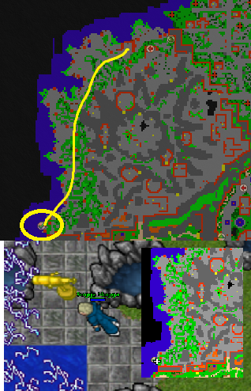
Continue then to the East and go into the Yalahar mayan ruins. Head from furthest stairs up and go to the top with Zeta doradus.
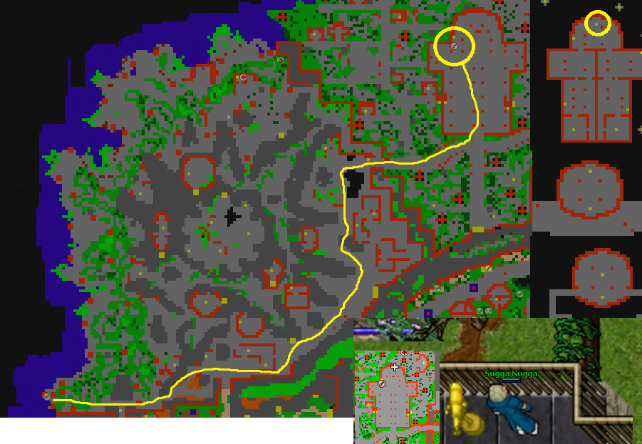
Then continue East to the Yalahar incan empire. Grab 3rd scope at the top of the middle tower place with Orbithrax and Vermithrax.
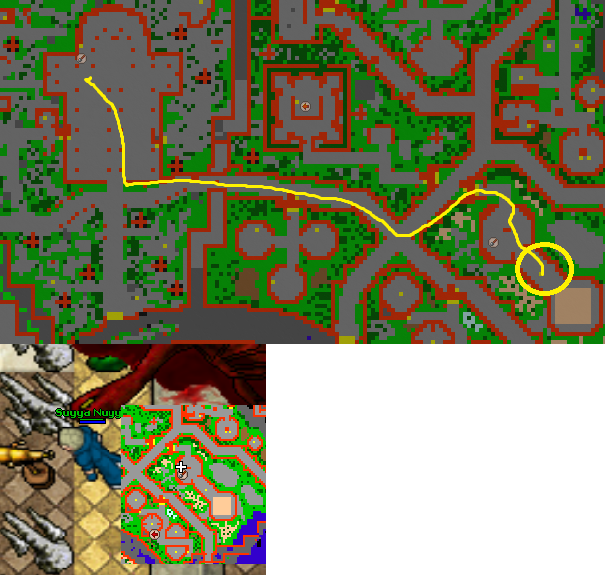
From there go just to the West stairs and then underground inside the building. Follow the road to the end with another Orbithrax and Vermithrax.
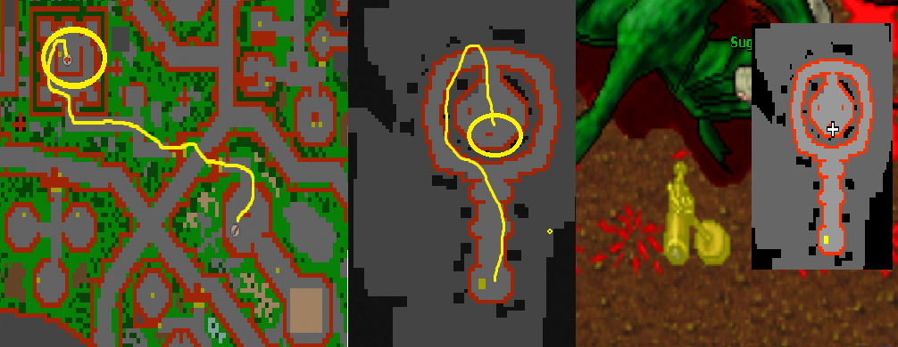
Now you are ready for the real questing place. If you haven’t attained Yalahar circle of mysteries checkpoint, go from edron boss run 2 and find the most South teleport and hop in.
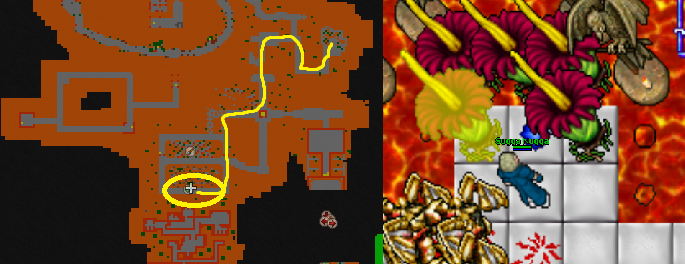
So at this main area, you have to find 29 scopes + 11 lever scopes. Some of those lever scopes are already pulled by default, but if someone pulls them, you have to pull them again. Picture down is showing the way how it should be, the lens has to face to the right. From here on it’s up to you if you want to first collect all scopes and then pull the lever scopes or do them all at once.
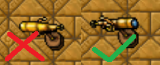
Best way to start this place is by going clock wise meaning West. Go up to the first building and pull the 1st lever scope. Go back down and continue to the West. There’s 1st scope hidden under the bushes. 2nd scope is in the building to the right and 3rd scope is up to the stairs and South.
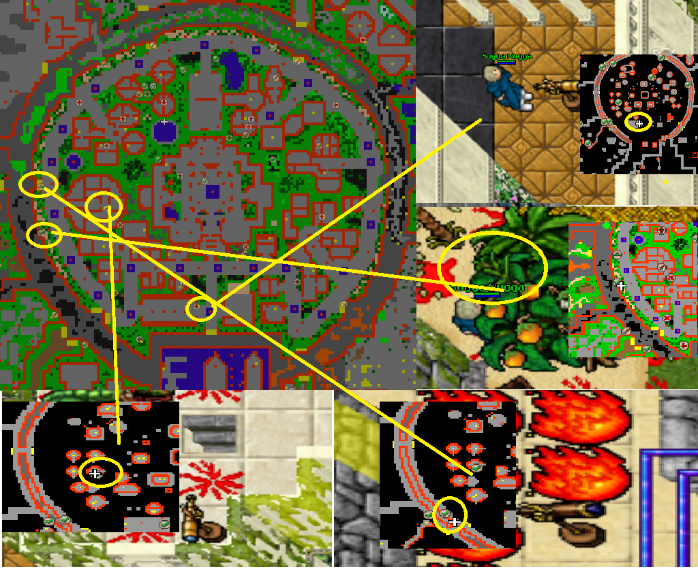
Continue forward and you’ll come across some houses on your right. Go into both houses and make sure both 2nd and 3rd lever scopes are facing the right direction. After that go North from there and grab 4th scope under the trees. After that go up to the walls and grab 5th and 6th scopes from both sides. Take care for evil limps, xapters, xarptorius and Vermithrax there.
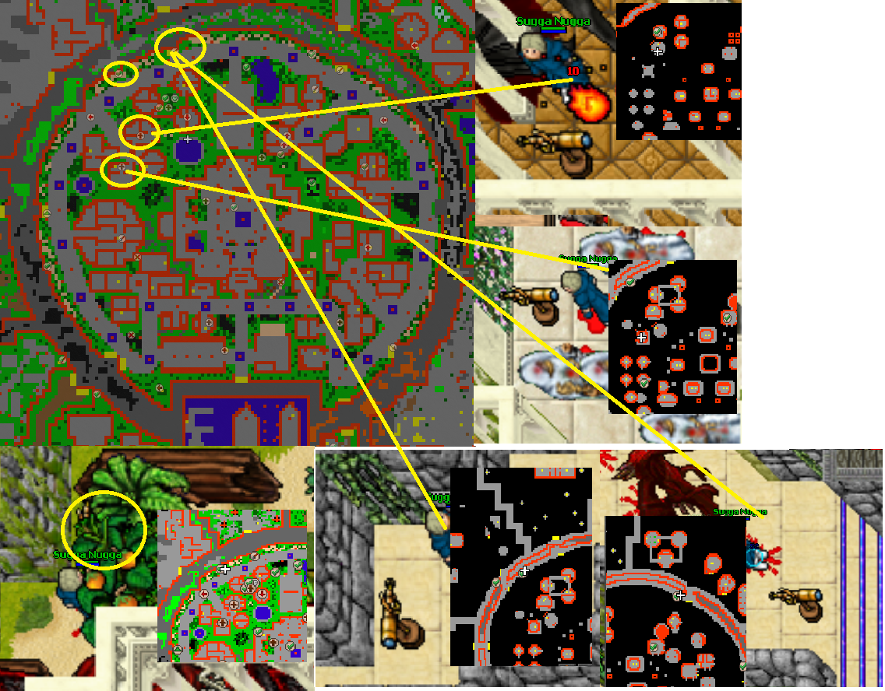
Now let’s head into the next building. There’s 7th scope hidden in the bushes right up front. 8th scope will be at left side upper building and 4th lever scope at the top. To the right side there’s a teleport that brings you to the 9th scope but there’s no way back. Now you have either wait monsters to kill you, use rune to get back or get someone to bring you the slime boss. That way you can continue without having to go back all over again.
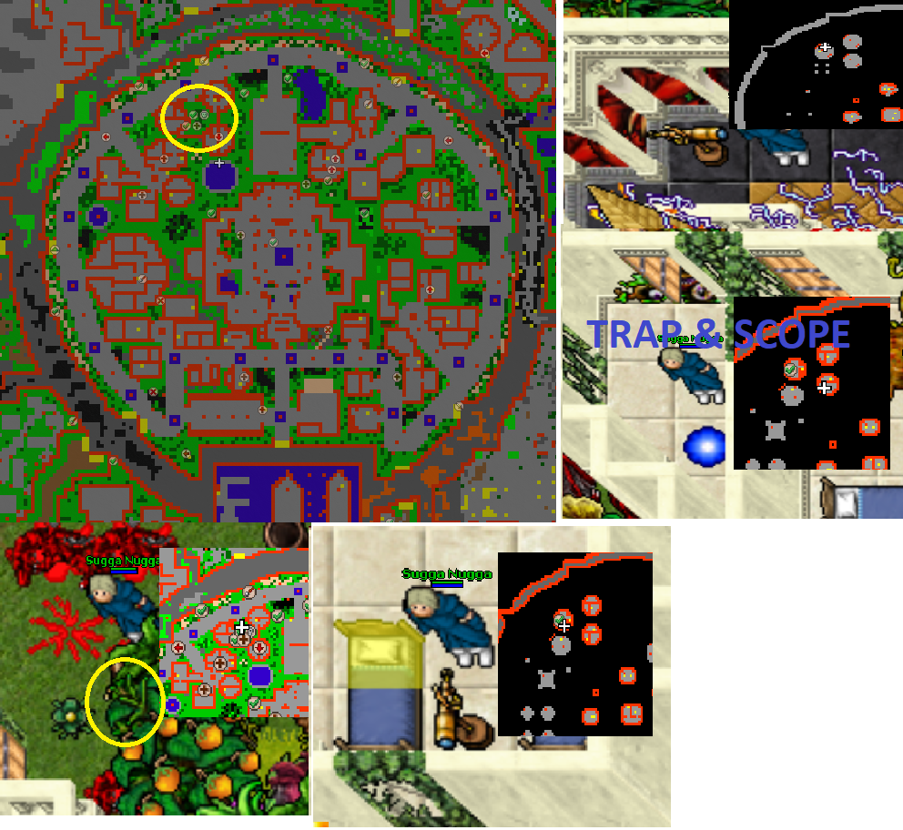
Let’s continue the journey on the North middle area. There’s 10th scope hidden underneath the bushes. 11th scope is underground in football arena with Vermithrax. 12th scope is in the middle of grass area, hugging the main building. Also there’s 5th lever scope to the East hidden under the bushes.
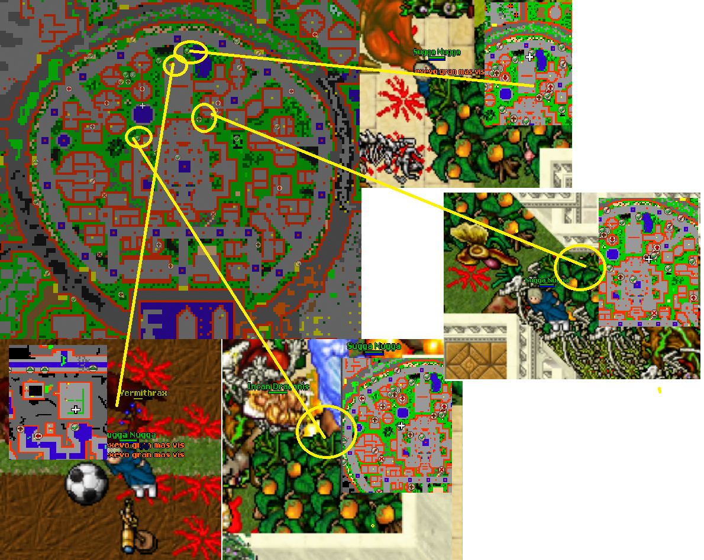
Continue to going clock wise and now to the walls again. There’s 13th scope with sky rider knights & the sky riders. 14th scope is at the building complex to the South from stairs aswell as 15th scope.
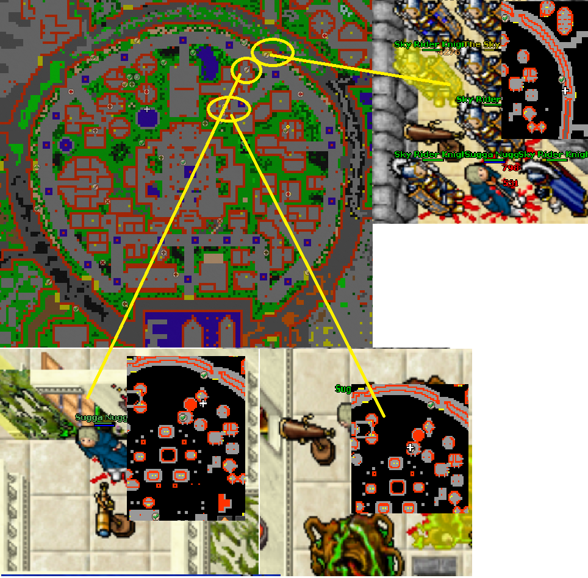
Next house complex has 16th scope up with the Arctoses (polar bears). After that continue going South stairs to the walls and grab the 17th scope. After that you can go pull 6th lever scope hidden in the bushes by the big house. 7th lever scope is to the West from there in tower with Pimp daddy 3000. Also there’s a hidden teleport between the trees South-West corner with 18th scope.
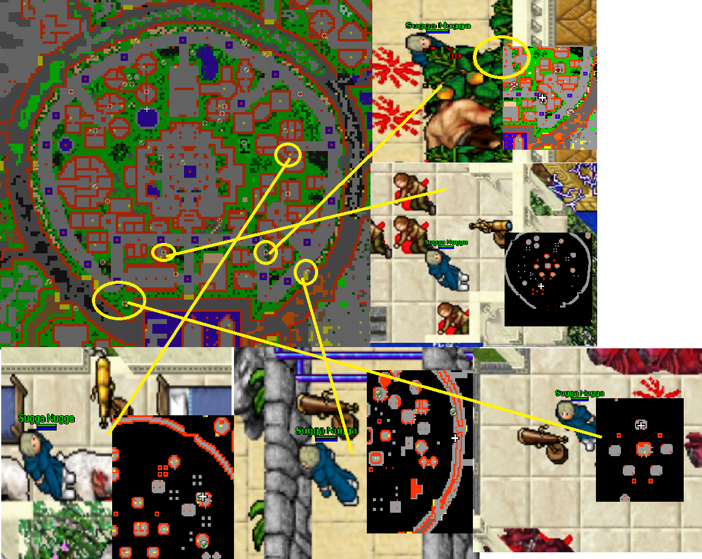
Now you are ready for some sewer rat time. Go into the sewers from right side (you went past it couple of minutes ago). You can choose if you want to do all from underground or go up at some point and hope there’s no back respawn yet.
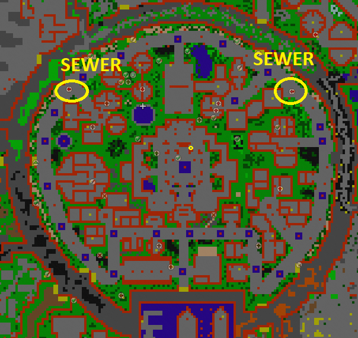
From right side go South with the holy knights for the 19th scope. Then continue South for 8th lever scope. NOTE: There’s also hitchhikers phase 2 scope so watch out as it can kill you if you forget to heal!
After that continue to the West past the Vermithrax, there’s 20th scope with Xarptoriuses and 21th scope underground with Wizards of visualis and Wizards of Gamma.
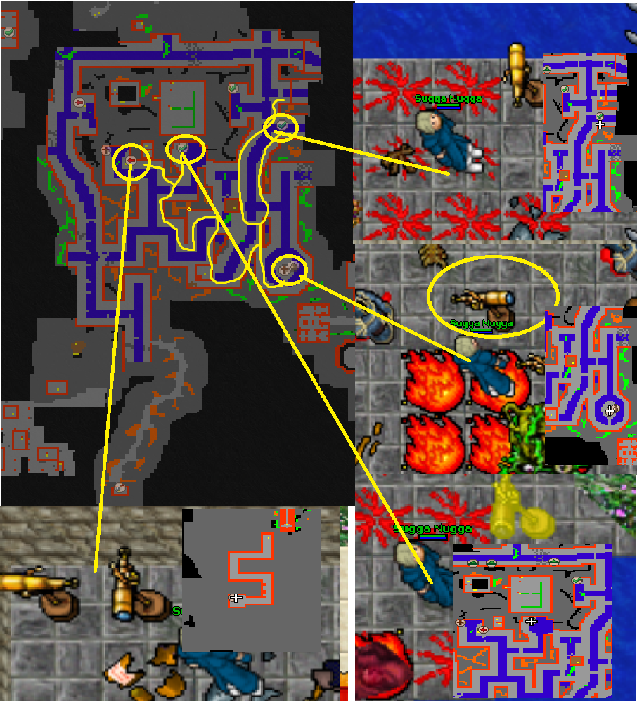Now it’s up to you if you want to go upstairs and go from main floor. I’ll put markings so you can move underground the whole time.
Go back to the ladders and past the small bridge. Go left to the other bridge going down and go full down with the King Aethbeld. There’s 22th scope. Next go full West and then South as far as The sky rider comes from the right towards you. Then go right and follow that path to the end for the 9th lever scope. Continue South as far as you can go and a little zic-zac as far as you find a door. Go full South there and then top of the tower with Barracuda man & 23th scope. After that you can go back up.
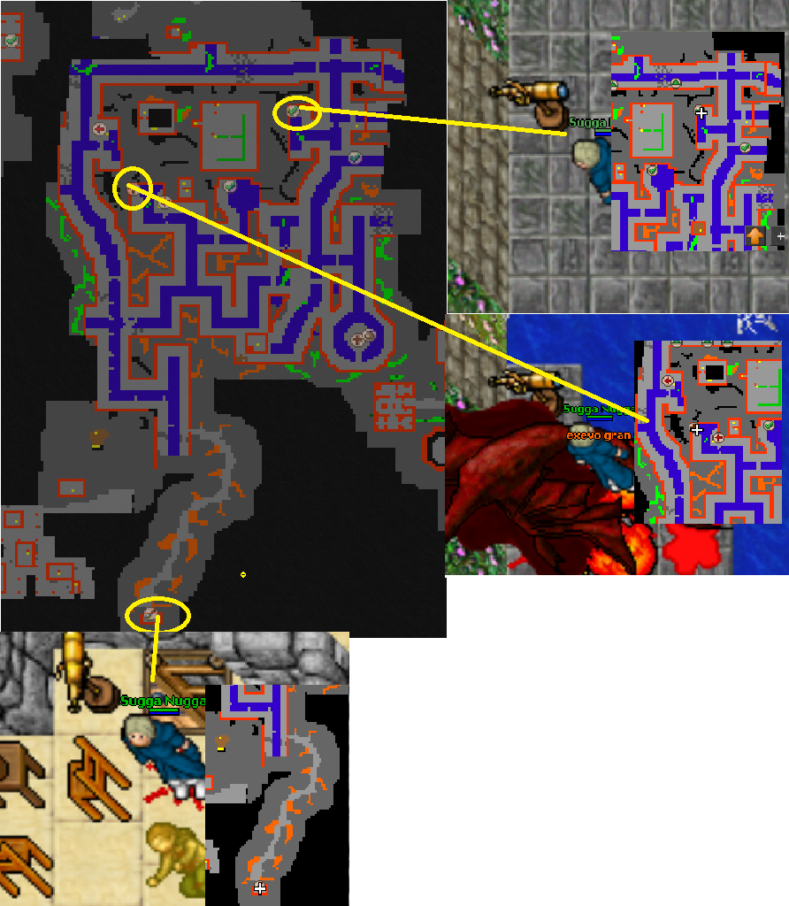Now you can head to the second last area with alot of teleports. There’s 2 trapped scopes and 3 which you can take without dying/teleporting back. Head East and second household on the middle go full up with xarptors and hop into the teleport.
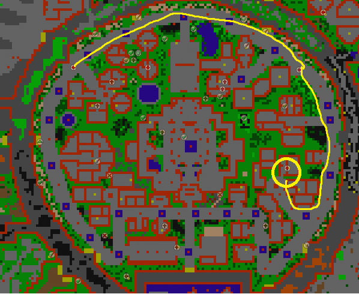
Start with the left side teleports, there’s only 1. With the 3 teleports side by side go into the middle one. From there you can still come back. Here is 24th scope.
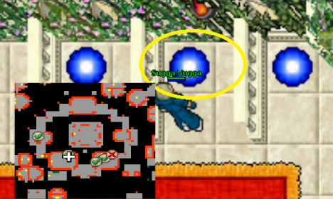
On the right side teleport it’s better to first take those trapped ones and then come back for those where you can come back. It’s up to you again how you wanna play it; either die, wait for slime boss or use rune of the homestead. Here are 25th, 26, 27th and 28th scopes.
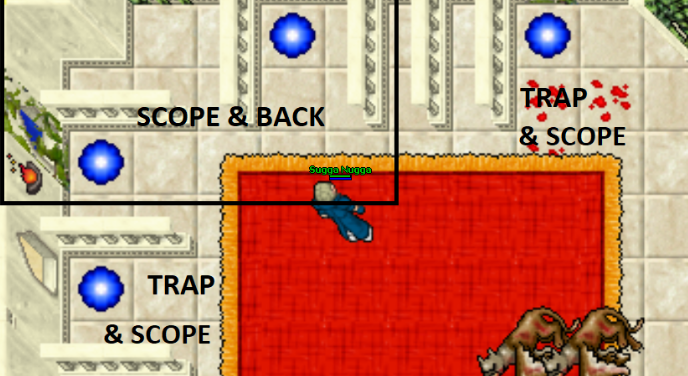
As you are finished with these, you can move forward. There’s 10th scope lever before the teleport to the center area at the tower with holy knights and some other monsters. Grab it and hop into the teleporter past Zeta and Alpha doraduses.
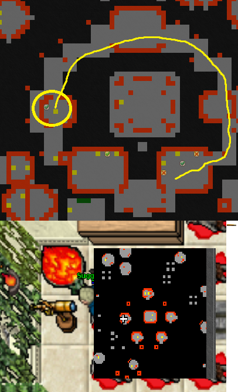
Now you’re at the last place with the last 29th scope of the Yalahar of circles. It’s in the middle of the area, 11th lever scope is the left hidden behind the bushes. After those just go down to the questing area and all should be clear if you have followed all the instructions. To get to the Spaceship, use the Spaceship key (Purple key) on the door.
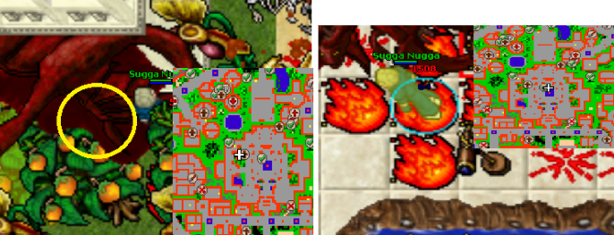
So now if you have followed this guide from the beginning, you should have all 33 scopes and checked 11 scope levers.
Get to the end of the area to claim Spaceship checkpoint. There’s 2 vermithraxes on the way along with Elder ophiuchus.
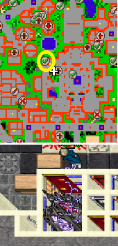